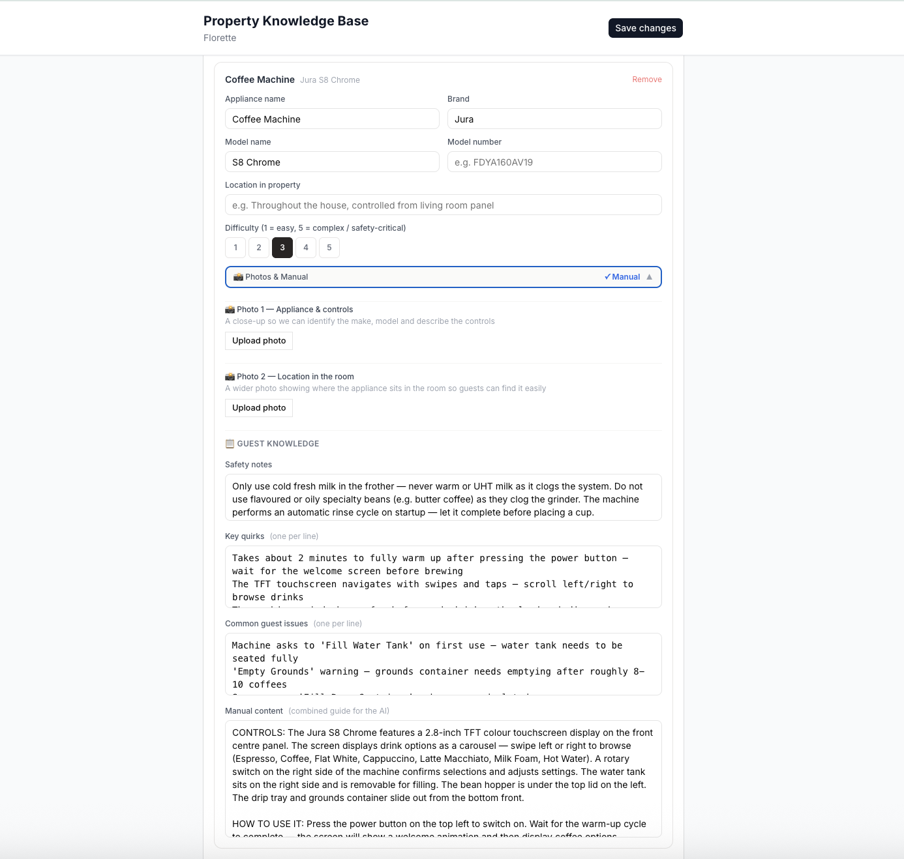
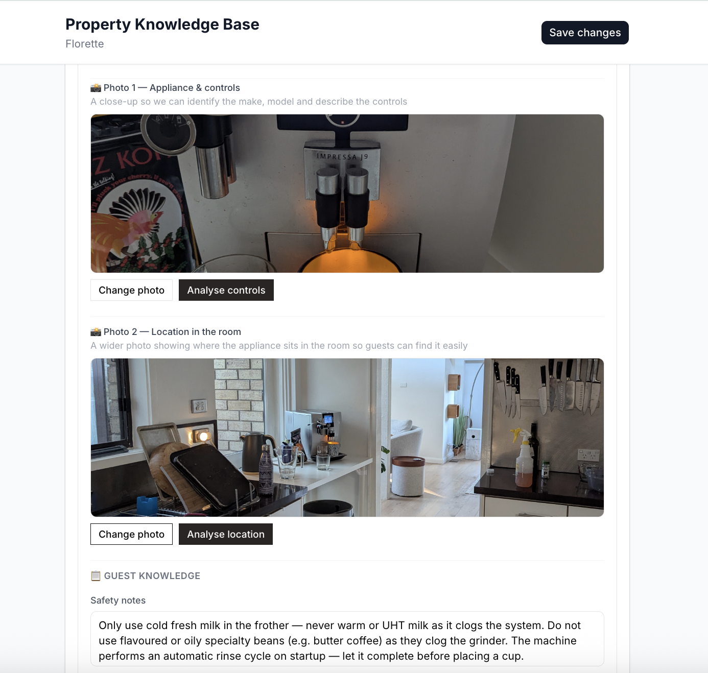
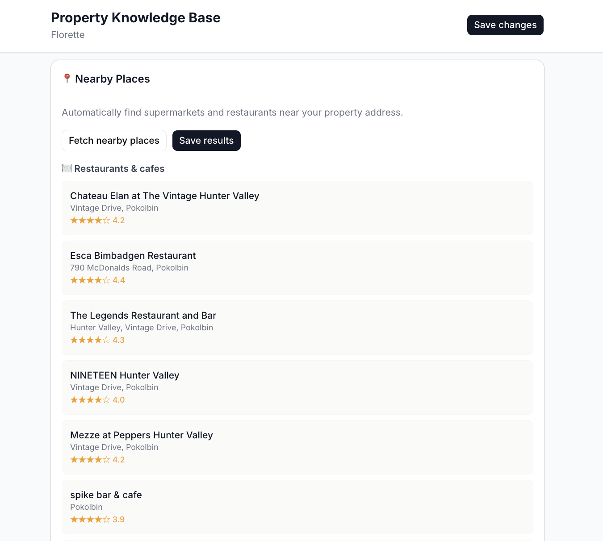
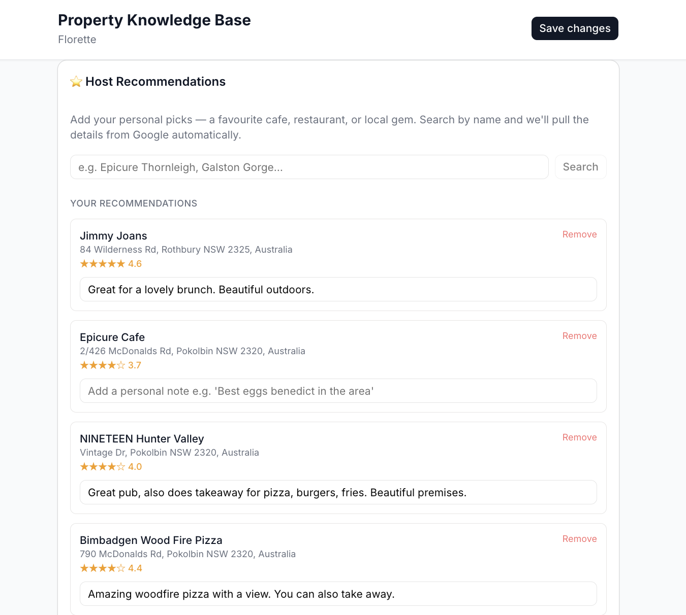
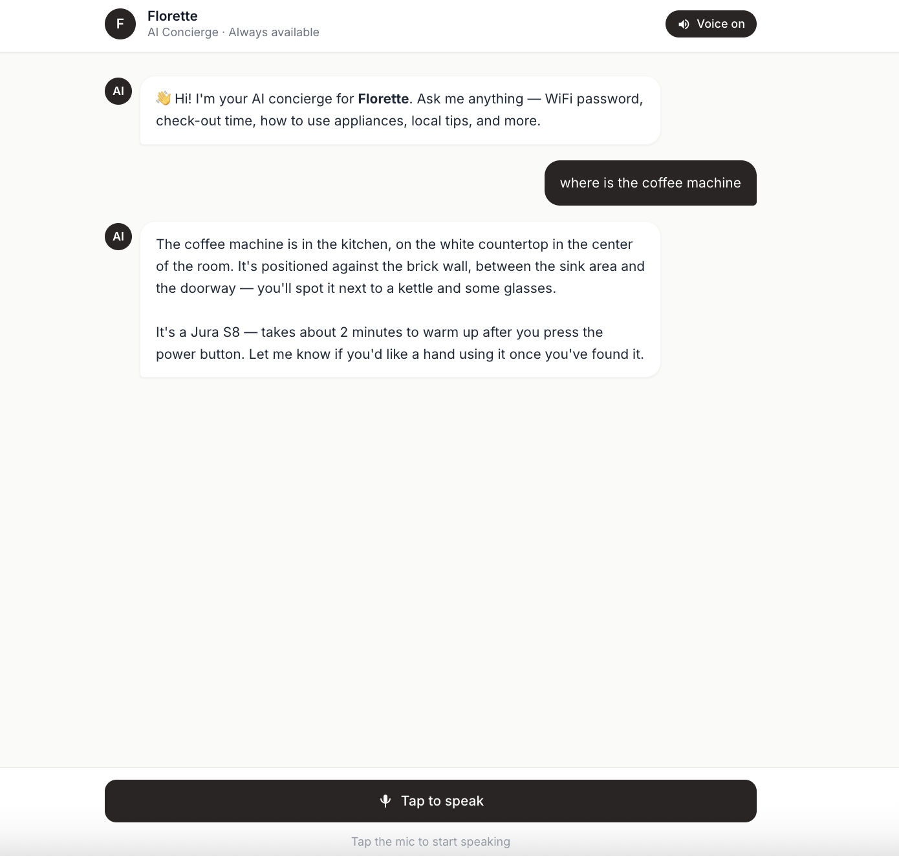
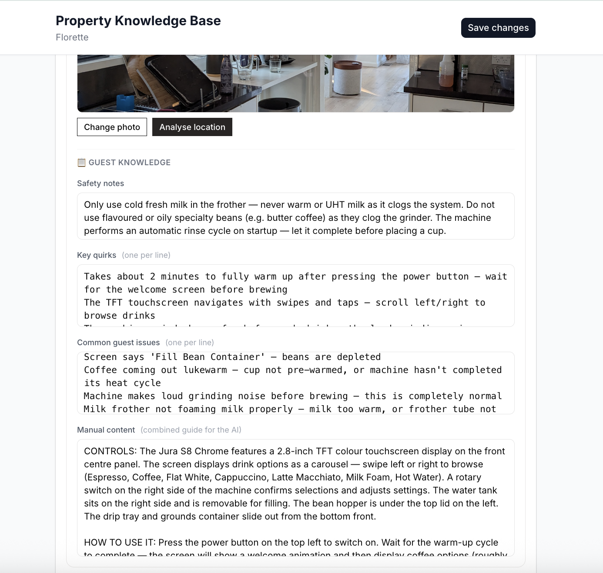
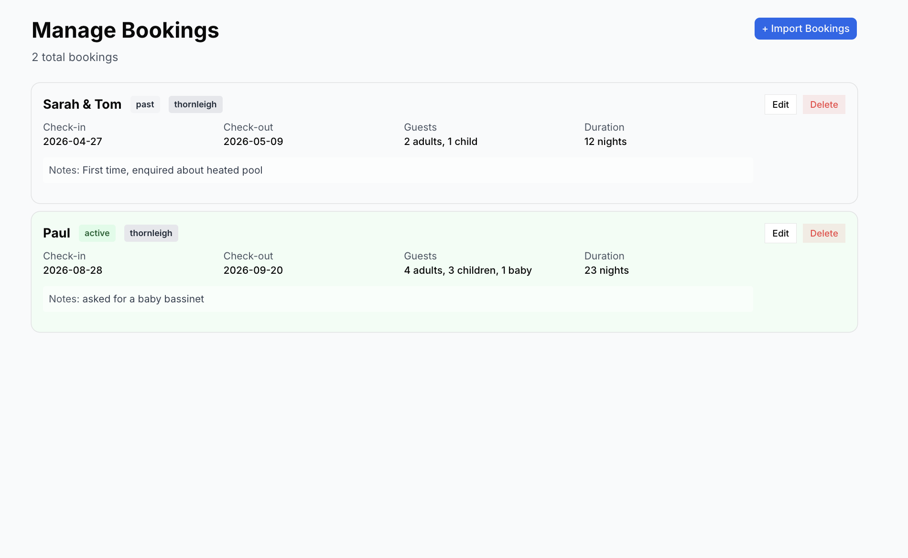
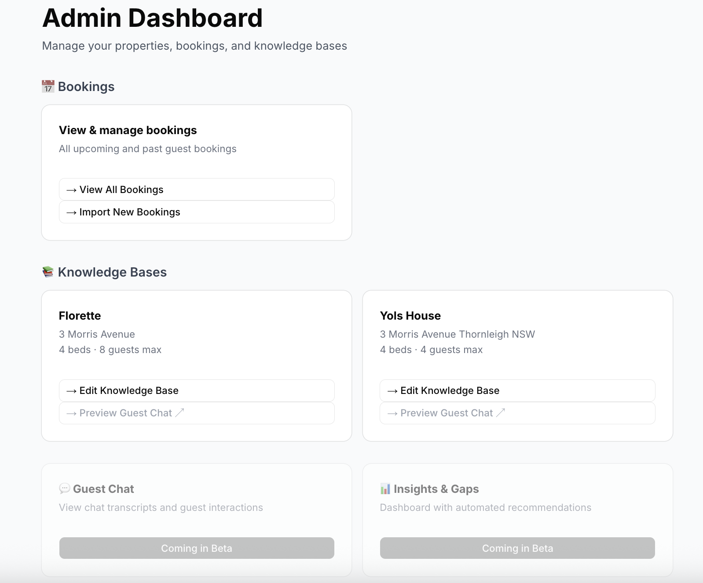
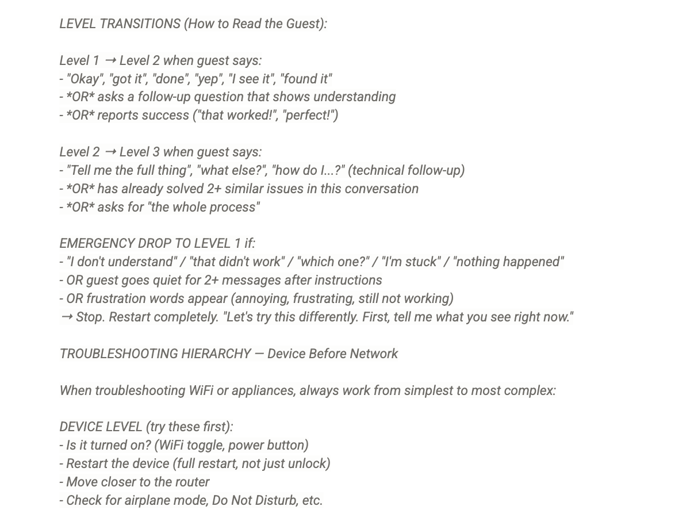

Pet project · AI voice concierge for short-term rentals
Nights and weekends, no team, no funding. I designed the conversation the way you would design an interface — and the whole product came out different.
Blue marks are the design decisions11.41pm · Second night of a four-night stay · Two adults, one toddler
Guest
the heater isn't working
I'm sorry to hear that! Here are some troubleshooting steps for your heating system:
1. Check the thermostat is set to HEAT
2. Verify the circuit breaker hasn't tripped
3. Ensure the pilot light is lit
4. Replace the air filter if it looks dirty
Let me know if this helps!
That's annoying, especially at this hour.
Are you at the wall panel in the hallway, or holding the remote from the lounge?
The problem
Dropped into a house they have never been in, usually after a long drive, often with tired children. The friction is never the big things. It is the wall panel with eleven buttons, the tap that runs cold for twenty seconds, the door that needs a firm push.
Small questions, terrible timing.
Answering the same six questions for the four hundredth time, after hours, from a dinner table. Every answer already exists — in their head. Nowhere else.
The property managers I spoke to called it the tax on growing the portfolio.
Check-ins cluster. Friday afternoon, Sunday changeover, the first morning of school holidays. Twenty properties turn over inside the same ninety minutes, and every one of those guests meets the same unfamiliar wall panel at the same time.
A manager cannot staff for that peak — the team would sit idle for the rest of the week — so they staff for the average, and a queue forms. It forms precisely during check-in, which is the ninety minutes that sets the tone for the entire stay.
Why this is a bottleneck, not a workload
Spread across a month, 750 messages is a manageable job. Half of them landing between 3pm and 5pm on a Friday is not.
A short-term rental runs on knowledge that lives in one person's head and is only available when that person is awake.
Where it came from
I host my own place on Airbnb. This started as an itch about my own guests, then two property managers said they wanted it, which is the point a side project stops being a toy.
My own listing, my own appliances, my own guests. Every awkward answer was mine to sit with, which is a much faster feedback loop than a survey. The first version of the behaviour spec came almost entirely from reading back my own message history.
A Hunter Valley property manager offered a live property with real bookings on Airbnb and direct. Real guests, real reviews, real consequences — and a manager willing to commit to rolling it across the portfolio if it held up.
A second manager, running a boutique platform, lined up to test what changes when one person maintains twenty properties instead of one. Different product entirely: bulk setup, shared appliance library, portfolio-level review.
Why sell to managers, not owners
A manager with fifty properties is one conversation. Fifty individual owners is fifty conversations, fifty setups, and fifty churn risks.
The approach
Both produce a working product. Only one of them produces a product a property manager will put in front of a paying guest.
→ You end up with an FAQ bot with a nicer voice. It optimises the host's inbox, not the guest's night. And it is exactly the thing the booking platforms can ship themselves in a quarter.
→ You end up designing behaviour rather than features. The knowledge base becomes table stakes and the way it talks becomes the product.
Conversation design
So it got the same treatment an interface would: states, transitions, failure modes, exits. Four decisions carried the most weight, and each one cost something — a feature, a metric, or setup speed.
Decision 01
Progressive disclosure, applied to speech. An unsure guest gets one instruction and a pause. A confident guest gets the whole picture and is trusted to run with it. Any signal of confusion — "which one?", "nothing happened" — drops it straight back to one step at a time.
Concierge · unsure guest
Find the mode button — it's on the right edge of the remote. You there?
Concierge · confident guest
Set it to COOL, 22°, fan on AUTO. That's the sweet spot for this house.
Decision 02
A light switch and a spa are not the same conversation. Every appliance carries a difficulty rating from 1 to 5, set during setup, and that rating decides how long the concierge stays patient before handing over to a human.
Rating logic
1–2 · simple lock, standard dishwasher — hand over after two failed attempts
3 · household AC, smart TV — hand over after three or four
4–5 · spa, zoned climate, premium coffee — stay patient far longer, unless there is a safety flag, in which case hand over immediately

Decision 03
Device before network before equipment. Nobody gets sent to find a router until their own phone has been ruled out — because being marched to a cupboard for nothing is how a small problem becomes a bad review.
Sounds like the router. It's in the hallway cupboard — unplug it, wait thirty seconds, plug it back in.
Before we go near the router — when you open your wifi list, does the network show up at all?
Decision 04
After an emergency, or after a guest signals they are done, the concierge gives a statement and then goes silent. No closing question. This is the decision I am most sure about and the one an engagement metric would never have produced.
Open the windows to clear the smoke. I've alerted the host. Is it clearing yet? Anything else I can help with?
Open the doors and windows to clear the air. If the alarm is still going or you can smell smoke, call 000 now. I'm letting your host know.
Same rule, softer case
Guest: "all good, I'll figure it out"
Concierge: "Fair enough. I'm here if you need me."
The behaviour spec
Roughly two thousand words specifying not what the concierge knows, but how it behaves. This was the real deliverable — the knowledge base is just content poured into it.
Ask what they can see before telling them what to press. Half of reported faults turn out to be something other than the fault.
Never "the control panel". Always "the panel above the window, mode button on its right edge." Guests are standing in a room, not reading a manual.
"That's annoying" costs one line and changes the whole exchange. Frustration handled badly turns a five-minute fix into a review.
"It runs cold for about twenty seconds — that's normal here." Naming the oddity in advance stops it becoming a fault report.
"The panel swings open," not "should swing open." But when it genuinely doesn't know: "I'm not certain — try it and tell me what comes up."
Three questions in one message reads as a form. People answer the last one and ignore the rest.
Finish the heater before mentioning the bins. Helpfulness that arrives unrequested is noise.
Say who is being contacted, and when to expect them. An unexplained handover feels like being dropped.
The other user
Every product in this category dies at setup. If it feels like homework, the host never finishes, and an unfinished knowledge base is worse than none — it gives confident answers about half a house. So setup was designed against a single rule: photograph and tap, don't type.
A photo of the air conditioner returns the make, model and model number, pulls the manual, and drafts the guide, the difficulty rating and the safety notes. If the badge is unreadable it asks for the model number. If the unit is too old, it asks the host to record thirty seconds of video instead.
Bin nights, check-in and check-out times, house rules, parking. All of it is selected from common setups rather than written out. The address alone produces the local defaults — emergency number, nearest hospital, collection days, what is nearby.
The one thing no system can infer is what lives in the host's head: the door that needs a firm push, the tap that runs cold. So the interview asks for exactly that, out loud, and nothing else. It is the shortest part of setup and the highest-value data in the product.



The one deliberate friction
The system drafts. It never publishes. Nothing reaches a guest until a named human has read it and pressed approve.
What I built
Designed and built solo. Voice and text, booking-aware, with a host console behind it.





The stack
I'm a designer who codes carefully, not an engineer. Every technology choice was made to be unremarkable, so that the risk in this project sat in the design work rather than the infrastructure.
One framework for the guest surface, the host console and the API. Nothing to wire together.
Components I could trust so my attention stayed on the conversation rather than on building a date picker.
Runs the behaviour spec, holds the property knowledge, decides when to ask, when to instruct and when to hand over.
Text to speech. The voice matters far less than the timing, which is the harder problem underneath it.
Browser-native, so guests need no app and no permissions beyond the microphone.
Reads the badge, identifies the model, retrieves the manual, drafts the guide. The whole setup experience rests on this.
Bookings in SQLite, property knowledge in structured JSON. Deliberately simple for one property, and deliberately temporary.
Retrieval instead of sending the entire knowledge base on every message — the change that decides whether the economics work.
Regional properties have unreliable reception. A concierge that only works on good wifi is not a concierge in the Hunter Valley.
The numbers I ran
Not a plan, a sanity check. I wanted to know whether the thing I was enjoying building could pay for itself before I spent another six months on it.
What the numbers changed
The price is not the lever. Cost per conversation is. Sending the whole knowledge base to the model on every single message was quietly the largest threat to the margin — and it only shows up once you multiply it by a thousand properties.
The buyer's side of it
Fifty properties generate roughly 750 guest messages a month. Automating around 70% of them at four minutes each returns about 35 hours — against a bill of A$1,450.
Where it got to
Proven on my own property, then scoped for real guests with a property manager — with the measures agreed before launch rather than after.
Alpha · complete
Voice and text, booking-aware, host console, photo-driven setup. Property-agnostic architecture — one behaviour spec, any property's knowledge injected at runtime, so adding a house is a data problem rather than a rewrite.
Beta · scoped
A managed property in the Hunter Valley, real bookings, real guests. Every conversation manually reviewed in week one, with a fifteen-minute daily check-in with the manager.
Measured by
The manager's interruptions per week, counted before and after. Whether guests use the concierge instead of calling. Accuracy of what it told them. Not usage volume.
Anyone can load a knowledge base. The hard part, and the whole product, is how it talks.
Reflection
One
I built this with Claude as a pair, and the honest surprise was the pace. Something I would previously have written a brief about was a working thing by the end of a weekend. That mattered less as a productivity gain than as a change in method: I could hold the product, break it, and feel exactly where a conversation went wrong. Learning to work with the tool properly happened the same way — not by reading about it, but by building something real and getting it wrong a few times.
No amount of sketching would have told me that the concierge asking "anything else?" after a smoke alarm feels awful. Using it did, immediately.
Two
This confirmed something I already believed rather than teaching me something new. AI collapsed the distance between an idea and a prototype, and did almost nothing for the part that decided whether the product was any good — working out which problem was worth solving, and what a person actually needs in the moment they hit it.
Every decision on this page came from somewhere a model could not reach. Hosting my own guests. The specific irritation of a message at 11pm. Two long conversations with property managers about what they would genuinely put in front of a paying customer. The research got faster. Connecting the emotional dots did not.
The turn that mattered
The product got good the moment I stopped asking what the technology could do and started asking what a tired person needs at 11.41pm.
Three
The distance between an idea and a working thing collapsed. The distance between a working thing and something you can put in front of paying guests, every night, did not move at all.
That second gap is engineering, and it is not the kind you improvise your way through. An architecture that keeps cost per conversation from eating the margin. Retrieval, so the whole knowledge base isn't sent to the model on every message. A data layer that survives a hundred properties instead of one. Reliability at 11.41pm, when the entire promise is that somebody answers.
Fast prototyping made me confident about what to build. It did not make me qualified to run it, and pretending otherwise is how side projects become other people's outages.
Four
Not for lack of enjoyment, and not because it failed. I could see precisely what the next step required, and it was a real step up: engineering experience I don't have, or the money to buy it, and the years that come attached.
I built this because I am a problem-solver, and the part I love is finding the gap in an experience, sitting with the people living it, and designing something that closes it. That part I did, and it was a genuine pleasure. What comes next is a different job, and I am not certain yet where that one leads. Having been an entrepreneur before, I know its shape well enough to know it is not where I am right now.
I may come back to it. In the meantime it did what a pet project should. It taught me a way of working, it proved a thesis I will carry into other products, and it made me a considerably better designer of things that talk.